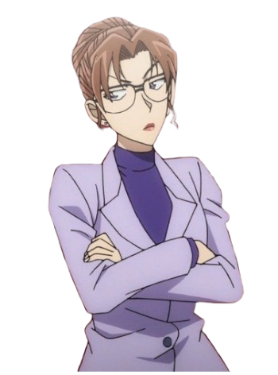

Main Character
Shinichi Kudo character of the series and Ran's love interest and later boyfriend.
He was shrunk into a child after being forced to take a poison, called APTX 4869, created by the Black Organization.
Conan Edogawa "Child" version of Shinichi Kudo. He's after the Black Organization to regain his original body.
The show follows his journey and the different cases he encounters along the way.
Ran Mouri Shinichi's childhood friend, and later his girlfriend. She doesn't know Conan's real identity.
She's the one taking care of him along with her detective father, Kogoro. She is also skilled in karate.
Kogoro Mouri eye and Ran's father. Separated from Eri Kisaki, Ran's mother.
Detective Boys
Ai Haibara Member of the Detective Boys and an adult shrunken by APTX 4869. Her former identity was a
Black Organization scientist codenamed "Sherry", real name "Shiho Miyano". She is a developer of the APTX4869.
Ayumi Yoshida Member of the Detective Boys. She likes Conan and she considers Haibara like a best friend to her.
 Mitsuhiko Tsuburaya Member of the Detective Boys. The most intelligent true child in the Detective Boys.
He is great when it comes to science and logic.
Mitsuhiko Tsuburaya Member of the Detective Boys. The most intelligent true child in the Detective Boys.
He is great when it comes to science and logic.
Genta Kojima Member and self-proclaimed leader of the Detective Boys. Loves to eat, especially roasted eel on rice.
Family & Friends
Sonoko Suzuki Ran's best friend. Youngest daughter of the wealthy Suzuki family.
Eri Kisaki Ran's mother, a very successful attorney. Married to, but currently living separately from Kogoro Mouri.
She is a friend of Yukiko Kudo from high school.
Yusaku Kudo Shinichi's father. A famous mystery novel author who is well-known in both America and Japan.
Yukiko Kudo Shinichi's mother. A retired actress, she can disguise well and can mimic voices without a
voice changer, a skill she learned from the deceased magician Toichi Kuroba. She is a close friend of Sharon Vineyard.
Heiji Hattori Shinichi's rival detective and best friend from Osaka. Known as "Great Detective of the West".
He's also a trained Kendo martial artist and the first to deduce Conan's true identity.
Kazuha Toyama Heiji Hattori's best friend since childhood and love interest. She is also a trained Aikido martial artist.
Hiroshi Agasa Professor who creates gadgets for Conan to use and the best friend of Yusaku Kudo. He was the first
to know about Conan's true identity.